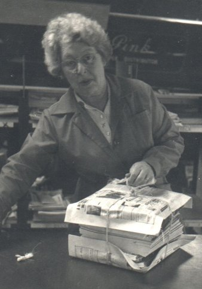
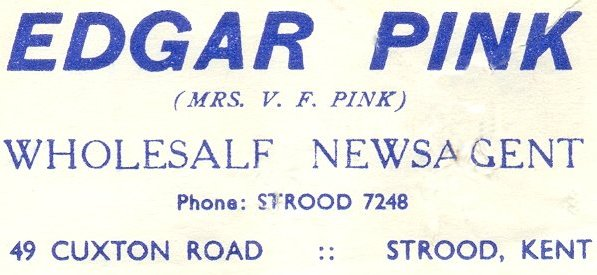
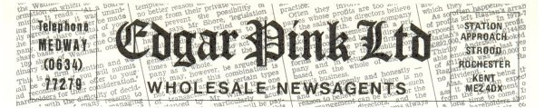
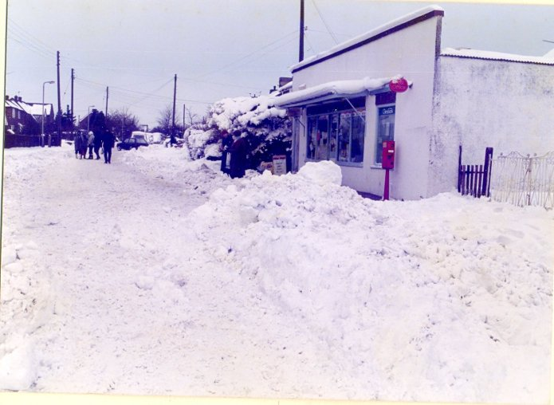

The Company
Edgar Pink Ltd 1963 -
Mum's Determination



Dad had been diagnosed with cancer in the lower bowel in December 1959, and
was admitted to St.Bart's hospital on boxing day. The operation was
extremely severe. Although 'successful', after 3 or 4 days he went into
decline, eventually dying on January 11th. from pnuemonia brought on by
post operative shock. A very difficult period to live through.
The very good aspect of our trade (at that time) was the fact that the job
had to be done 24 hours of the day and night, which rather prevented you
from dwelling on your sorrow too long. Straight away, Mum and I both knew
that we must notify Fleet Street of the event and assure them the business
was able to function with the very able management of Jim Fullagar and the
staff. Mum applied to each publisher separately in writing to be their
agent for the area. That kept us both very busy without the use of
computers!
In 1963 Mum founded the company EDGAR PINK LTD. Intially she held 51% of
the shares, John and Valerie 10% each leaving me with 29%. This was
necessary because Fleet Street Proprietors would allow you to form a
limited company, but would only acknowledge within that company 'their
agent' who must hold at least 51% of the shares. At the time, John was in
the air force, and Valerie was the little housewife!
John was based at Seletar or some such distant place (I will need to ask
him!) and Mum took a well earned break and went to visit him and his wife,
Marty. She had only turned her back five minutes when the weather took a
turn for the worse! and how!!
Normally, our newspaper supplies arrived on a Sunday at Rochester station
at around 5.30 am. and we handled them there in the waiting room using
tressle and board to make a bench. Actually quite a slick operation all
things considered. One particular Sunday the snow started coming down thick
and heavy and there was no sign of the train. We asked the inspector to
find out how much longer it would be and he came back and said it was stuck
this side of Swanley in 10ft of snow and they were sending a snow plough up
to free it. (It was steam in those days). He said " a couple of hours at
least", so I took the dozen or so staff and one or two newsagents who used
to pick up their supplies over to "ANDY SNACKS" next to the Majestic cinema
and we all enjoyed egg sausage bacon and a fried slice and baked beans
before returning to wait for the papers to arrive. - The train eventually
chugged in at 10.20 and we got the papers down and started to pack them
into individual newsagents supplies. The radio gave out that the roads were
impassable in many areas and the army was called in to clear the main
routes. Undaunted we got every supply delivered by 3.00 pm, and did so each
successive day where the post, bread and milk all failed to make it. Very
often we would walk the last mile with the papers held up on our shoulders
to prevent them getting wet. Mrs Mclaughlin at High Halstow would pour
George Greenwood and I a half tumbler of whisky when we got there, usually
about 10 in the morning. There was one morning when walking back to my
Simca car at the end of Christmas Lane we were horrified to see a snow
plough had been along and shoved 8ft of snow up against my car! - a good
job we had shovels on board. - Similar deliveries were made each day to
Wouldham, that too being cut off by the other services
That same Sunday, the agent at Chatham just went back home, came back on
Tuesday and stuck labels on the bundles and sent them all back to Fleet
Street. - He was replaced instantly!
High Halstow under snow!!
